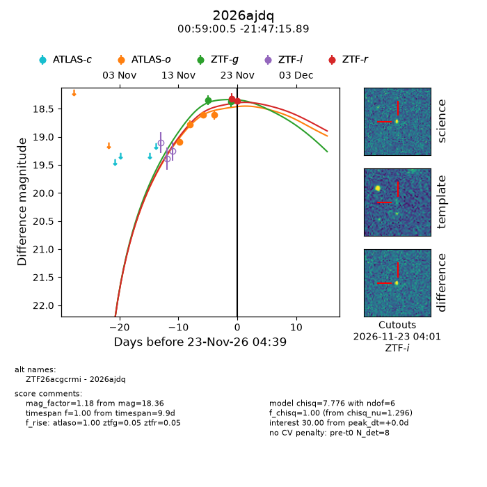
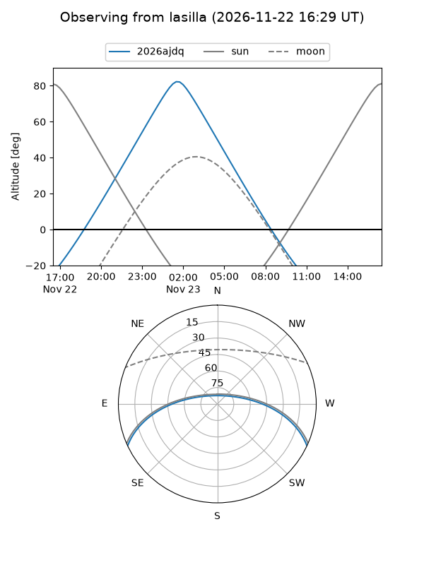
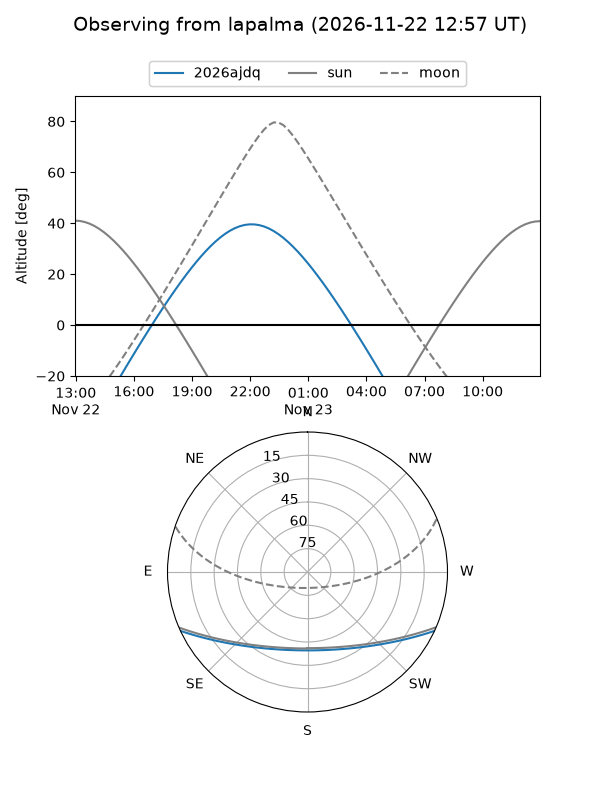
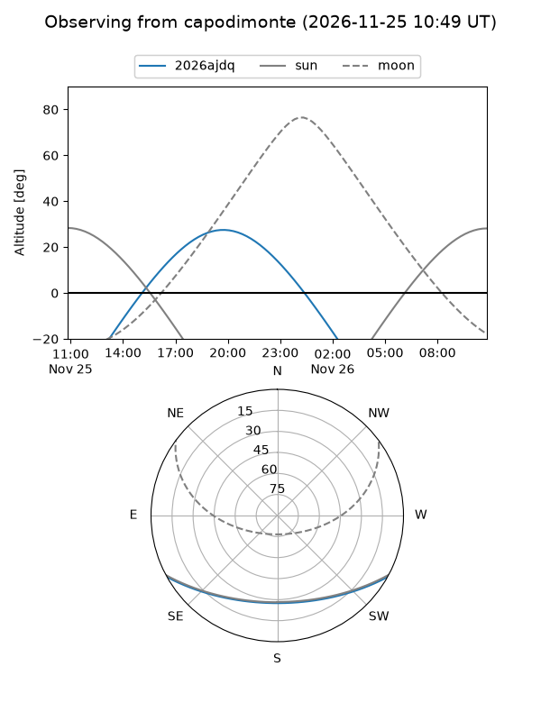
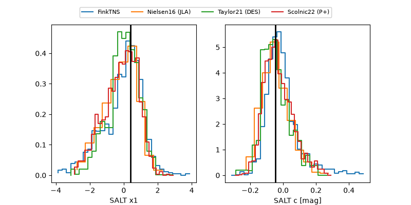

2026ajdq
Target 2026ajdq at 2026-11-23 04:41
Aliases and brokers:
FINK-ZTF: ztf.fink-portal.org/ZTF26acgcrmi
Lasair-ZTF: lasair-ztf.lsst.ac.uk/objects/ZTF26acgcrmi
ALeRCE-ZTF: alerce.online/object/ZTF26acgcrmi
YSE-PZ: ziggy.ucolick.org/yse/transient_detail/2026ajdq
TNS name: wis-tns.org/object/2026ajdq
Direct TNS query: direct search
alt names
ZTF26acgcrmi (ztf,fink_ztf)
2026ajdq (tns,yse)
Coordinates:
equatorial (ra, dec) = 14.7521,-21.78775
equatorial (HMS+DMS) = 00:59:00.50,-21:47:15.89
galactic (l, b) = (141.2108,-84.38881)
Flags:
peak dt: +0.0
Photometry:
last atlaso=18.61, ztfg=18.37, ztfr=18.36
4 atlaso, 2 ztfg, 2 ztfr detections
Lightcurve

Visibility



Additional plots
